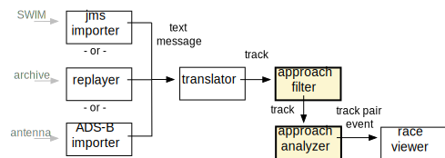
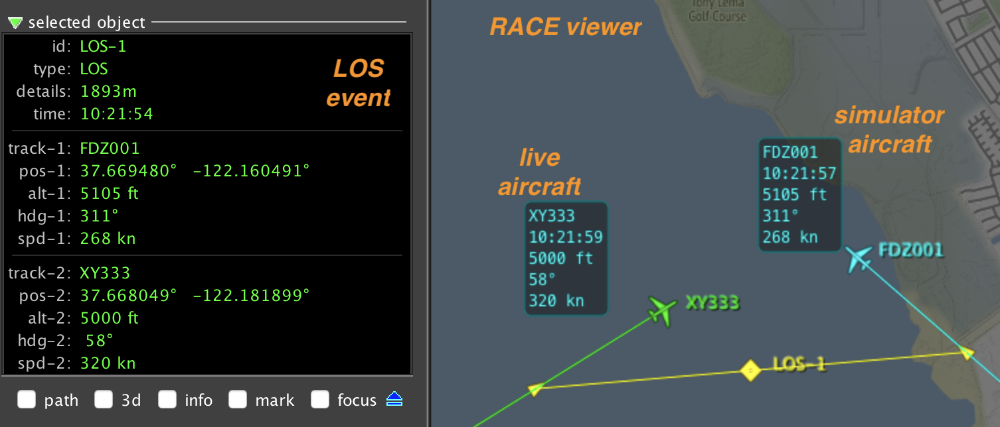

0 / 0
00:00
Where did RACE come from?
Application Gamut
- common theme is parallel computation
- ranges from distributed/network applications to heterogeneous (GPU/SIMD) computation
- main focus is concurrent (multithreaded) program domain (without the pitfalls of thread sync)
- primary components are Actors

RACE Foundation: Actor Programming Model
- well known concurrency programming model since 1973 (Hewitt et al)
- Actors are objects that communicate only through async messages
⟹ no shared state
- objects process messages one-at-a-time ⟹ sequential code

RACE Implementation: Actor System
- runs on JVM, programmed in Scala using Akka actor library
- RACE = set of communicating actors
- RACE messages are sent through (logical) publish/subscribe channels
- RACE actors/channels are runtime configured (JSON), not hardwired

RACE Application Design
- uniform design - everything is an actor
- toplevel actors are deterministically created, initialized and terminated
by Master actor
- actors communicate through (configured) bus channels

Example 1: Data Diversity and Volumne
- live NAS visualization plus local sensors
- imports SWIM messages (SFDPS,TFM-DATA,TAIS,ASDE-X,ITWS) and local ADS-B
- up to 1000 msg/sec, 4500 simultaneous flights
- RaceViewerActor uses embedded NASA WorldWind for geospatial display
1: ./race --vault ../conf config/air/swim-all-sbs-ww.conf
Example 2: (re)Play it Again
- only import actors are replaced with replay actors
- everything else stays the same

1: ./race -Darchive=../data/all-080717-1744 config/air/swim-all-sbs-replay-ww.conf
Example 3: Now With Remote Actors - Location Transparency
- actors are location transparent - can be moved to different RACE processes
- can exchange data- (SWIM) and control- messages (viewer sync)
1: ./race config/remote-lookup/satellite1-replay.conf
2: ./race config/remote-lookup/satellite2-replay.conf
3: ./race -Dmonitor.interval=15s -Darchive=../data/all-080717-1744/sfdps.ta.gz config/remote-lookup/master-replay-ww.conf
Example 4: What Data - SWIM Message Statistics
- RACE more than a data visualizer
- example collects live SWIM message statistics
- serves results as a web page (embedded webserver actor)
1: ./race --vault ../conf config/air/swim-msg-stats.conf
Example 5: Is There a Problem with the Data?
- goal: find anomalies in flight update messages:

1: ./race -Darchive=../data/all-080717-1744/tais.ta.gz config/air/swim-tais-stats-replay.conf
Example 6: Properties can be more Complex - Parallel Approaches
goal: automatically detect parallel approaches that are angled-in exceeding
30° heading differences within given distance (causing loss of sight)


1: ./race -Darchive=../data/nct-121918-161829/tais.ta.gz -Dstart-time=2018-12-19T16:32:20.000-08:00 config/air/swim-tais-papr-replay.conf
Example 7: More Complex Properties - Trajectory Deviation
- how do positions for same flight differ between different input sources
(ASDE-X, TAIS, SFDPS, direct ADS-B)?
- are differences random or systematic?
1: ./race -Darchive=../data/ACA759-070717-min -Dstart-time=2017-07-08T06:54:30Z config/air/swim-trackdiff-replay.conf
RACE as a Hub - Connecting Simulators
- heterogeneous system: combines live (SWIM) data and external simulators
- RACE used as a data hub that adds analysis (proximities, LoS detection)

Example 8: RACE as a Hub - Connecting Simulators



Sharing Data Across Heterogeneous Organizations
- initial use case rapid rollout for disaster management
- applies to many situations where unified data view across organizational entities
with intentionally isolated data is required
Sharing Data - Overlay Network of RACE Nodes
- previous examples use a single RACE as data consumer/analyzer or hub
- can also be used to create networks of communicating RACE nodes (dedicated
machines running RACE)

Sharing Data - RACE Node Functions
- node interfaces through 4 actor types: user-server, node-server, node-client, provider-import/export
- org-local data display and entry through user-server (browser interface)
- sync with upstream and downstream nodes through node-server/node-client
- upstream/downstream/user clients: JSON over websockets (allowing non-RACE endpoints)

Sharing Data - Application
- can be incorporated into any RACE application
- turns RACE applications into Web Application servers
- data model can include discrete event updates (counters) and streams (links)
Example 9: Partitioning the Network (SHARE)
- network partitions continue to work locally when disconnected
- network re-synchronizes when partitions are re-connected
1: ./race config/net/share-coordinator.conf
2: ./race --vault ../conf config/net/share-node_1.conf
3: ./race config/net/share-node_2.conf
TL;DR
- RACE is an actor based framework for building distributed and concurrent applications
- primary design goals: scalability and extensibility
- can be used as a library (from external projects)
- used for runtime monitoring, trajectory analysis, simulation, dynamic data web application server,
distributed applications,...
- open sourced under Apache v2
- written in Scala, based on Akka library
- ~700 files, ~100,000 ncloc
- developed since 2015